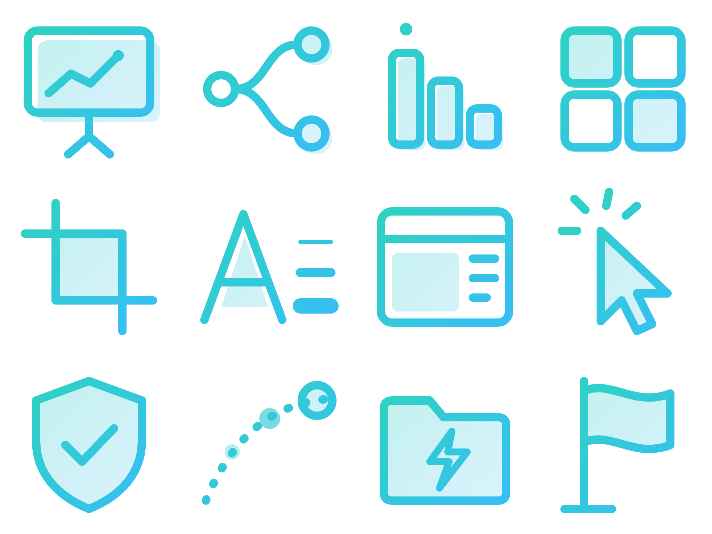
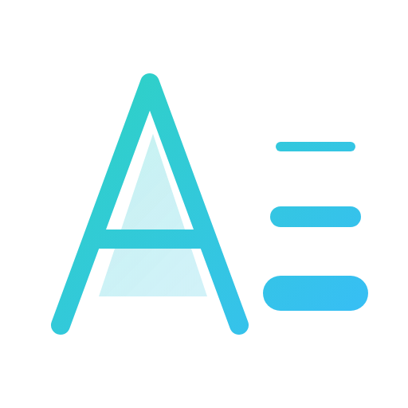

HTML-SLIDES v1
好讀優先、互動加分
好讀優先、互動加分
HTML 簡報製作規範
兩個硬條件加上完全離線，讓每一份簡報長得一致、好讀，而且能長期修改。
條件 1 自繪圖示大圖
條件 2 源樣黑體三級粗細
離線播放
2026-10-08 · 按 → 開始，按 O 看全部頁面
01 原則
HTML 簡報贏在導覽與互動，不是特效
PPT 直接轉 HTML
- 每頁塞滿文字，變成資訊牆
- 用 emoji 充當圖示，風格不一
- 圖表貼截圖，不能看細節
- 引用線上字型與套件，斷網就破版
本規範
- 左側章節隨時跳轉，進度一目了然
- 同一張大圖裁出的圖示，風格一致
- Chart.js 動態圖表，滑鼠移上看數值
- 字型、套件全部放本地，離線可播
01 原則
可讀性永遠排第一，裝飾排最後
取捨時由上往下看：上面的項目不能為了下面的項目犧牲。
- 資訊可讀性
- 簡報敘事邏輯
- 視覺層級
- 互動體驗
- 動畫
- 視覺裝飾
02 條件 1
圖示一次規劃、畫成一張大圖、再裁切使用
STEP 1
列出全部圖示
03_icon-inventory.md
STEP 2
畫進同一張 SVG
icon-sheet.svg，雙色線條
STEP 3
轉成 2 倍 PNG 大圖
build_icons.py
STEP 4
依格子裁成 I01–I12
自動產生 ICON_MAP.md

禁止 emoji、符號字元當圖示、Font Awesome 等圖示庫
ICON MAP
- I01
- presentation 簡報螢幕
- I02
- navigation 導覽
- I03
- priority 優先順序
- I04
- icon-sheet 圖示大圖
- I05
- crop 裁切
- I06
- typography 字體
- I07
- layout 版型
- I08
- click 互動點擊
- I09
- quality-shield 把關
- I10
- motion 動畫
- I11
- offline 離線
- I12
- flag 結論
每格 256px，渲染 2 倍後裁成 512px 的 PNG。改圖只要改 SVG 再執行一次 build_icons.py。
02 條件 2
標題 900、副標 700、內文 400，一眼分出層級
900 Heavy標題說結論
700 Bold副標與 KPI 數字
400 Regular內文保持清爽易讀，最小不低於 1.4rem。

字體：源樣黑體 GenYoGothic2 TW，只抽出本簡報用到的字，轉成 woff2。字級階層（rem，1600×900 畫布）
03 可讀性底線
四個數字守住可讀性
每份簡報都要守住這四個數字，hook 會自動檢查其中三項。
0
每頁主訊息
標題直接寫結論
≤0
每頁條列上限
超過就拆頁或收進點擊
≥0rem
內文字級下限
預設 1.7rem
0
外部連線
CDN、線上字型都不用
可用版型：
A 封面B KPIC 雙欄D 時間軸E 甘特F 流程G 比較H 儀表板I 圖解J 結尾
03 製作流程
製作流程只有一個等待點：Storyboard 確認
確認前只做規劃；確認後一路做到瀏覽器 QA 通過。
工作
步驟 1
步驟 2
步驟 3
步驟 4
步驟 5
步驟 6
內容分析與規劃
規劃 01–04
使用者確認
圖示大圖與裁切
圖示
撰寫 HTML
HTML 與互動
抽字與 QA
抽字＋QA
滑鼠移到橫條看說明，點一下開詳細面板，按 Esc 關閉。
內容分析與規劃
- 產出
- 01_content-map、02_storyboard、03_icon-inventory、04_design-system
- 重點
- 先決定每頁目的與呈現形式，不把原文平均分頁
- 狀態
- 本簡報已完成
使用者確認 Storyboard
- 規則
- 使用者明確同意後，才把 02_storyboard.md 改成「狀態：已確認」
- 把關
- 未確認時 hook 會擋下 index.html 的修改
圖示大圖與裁切
- 腳本
- build_icons.py
- 輸出
- icon-sheet.png、assets/icons/Ixx.png、ICON_MAP.md
撰寫 HTML 與互動
- 範圍
- 只改內容區；新樣式加在 css/deck.css 尾端
- 元件
- reference/components.md 列出的版型與元件
抽字與 QA
- 抽字
- build_fonts.py，每次改文字都要重跑
- QA
- qa_render.py：1920×1080、1366×768、1024×768，深淺色各一輪
- 完成條件
- FAIL 為 0
04 HOOK
必修項目直接擋下，品質問題只提醒
| 檢查項目 | 等級 | 不合格時 |
|---|---|---|
| emoji、符號圖示、圖示庫 | 擋下 | 改用 assets/icons/Ixx.png |
| 大圖 → 裁切鏈是否最新 | 擋下 | 重跑 build_icons.py |
| 源樣黑體與 900／700／400 | 擋下 | 只能用字重 tokens |
| 有字沒抽進字型 | 擋下 | 重跑 build_fonts.py |
| CDN、線上字型、外部圖片 | 擋下 | 下載到 vendor／assets |
| Storyboard 未確認就動工 | 擋下 | 先給使用者確認 |
| 單一清單超過 7 條、標題只寫分類 | 提醒 | 拆頁、標題改寫成結論 |
04 動畫
動畫用來解釋，不用來炫技
原則：輕、順、快、有目的。系統開啟「減少動態效果」時自動停用。
可以用
- 逐步揭露：按一下出現一點
- 圖表進頁才長出來
- KPI 數字從 0 跳到定值
- 甘特橫條、圖解線條依序畫出
禁止
- 每個字都飛進來
- 圖示旋轉、無意義彈跳
- 閃爍、連續縮放
- 大量粒子與過度 3D
記住三件事，每份簡報都一致
- 先給 Storyboard：使用者確認後才開始做
- 圖示畫成一張大圖再裁切：不用 emoji，不用圖示庫
- 源樣黑體 900／700／400：全部離線，雙擊就能播
［1］生成簡報Prompt.pdf（使用者提供，讀取 2026-10-08） ［2］2026-10-08 與使用者確認的規則
［3］Reveal.js 6.0.2（2026-09-10）、Chart.js 4.5.1 ［4］GenYoGothic2 v2.100，github.com/ButTaiwan/genyog-font（2024-08-22）